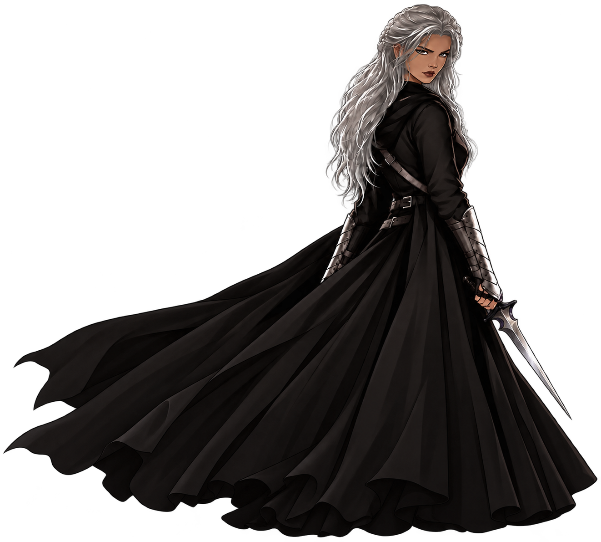

The Godwoven Trilogy
Saber
Feared by the living. Haunted by the dead.
Known as the vigilante Nightstalker, Saber has spent her life concealing a dangerous secret. Cursed by the god of death, she is forced to relive the final memories of murder victims, witnessing their deaths through their own eyes.
Feared by many and trusted by few, she finds an unlikely companion in Firefly, a mischievous miniature dragon with a fierce loyalty that far exceeds his size.
When a string of mysterious murders draws her into the King of Thieves’ world of secrets and political intrigue, Saber discovers that the dead may hold the key to a conspiracy reaching far beyond the Empire’s throne.